Milestone 4 Progress Report
PACMANS TEAM: • Jennifer Sleeman (JHU APL) PI • Anand Gnanadesikan (JHU) Co-PI • Yannis Kevrekidis (JHU) Co-PI • Jay Brett (JHU APL) • David Chung (JHU APL) • Chace Ashcraft (JHU APL) • Thomas Haine (JHU) • Marie-Aude Pradal (JHU) • Renske Gelderloos (JHU) • Caroline Tang (DUKE) • Anshu Saksena (JHU APL) • Larry White (JHU APL) • Marisa Hughes (JHU APL)
1 Overview
This technical report covers the period of April 2022 through May 13, 2022. The report documents the achievement of the milestone associated with Month 5 of the JHU/APL-led PACMAN team’s statement of work. The delivery for this milestone is this report which highlights progress made for the AI surrogate modeling and the AI simulation research.
• This report includes:• New architectures• Experimental definitions• Findings based on experimental results• Next steps
2 Goals and Impact
- Goals for this milestone included:
Obtain the first set of experimental results for the AI surrogate modeling based on testing the formalizations described in Milestone 3
Perform early experimentation of a baseline GAN for a subset of explorations and what-if questions
Show feasibility of the causal model
Obtain baseline symbolic language experimental results
3 Key Findings
- Surrogate Learning (Task 3.3)
Completed the first set of bifurcation diagrams for the box model equations
- Discovered a new type of tipping point in the Box model using the non-dimensionalized equations
In Gnanadesikan 2018 paper a fold bifurcation was assumed, we discovered subcritical Hopf bifurcation also exists for the reverse transition
Plan to publish these findings – this represents a new insight into potential AMOC behavior
- AI simulation (Task 4.3)
- Completed first set of multi-agent generator GAN experiments using the box model data
Generators show a positive tendency towards AMOC collapse
Setup a baseline neuro-symbolic experiment using rules-based model with a set of questions which correlate with the box model Gnanadesikan 2018 experiments
- Developed a first approach for bi-directional translation between the neuro-symbolic language and the GAN perturbations
If successful, this model will show how a GAN’s perturbations of symbols can be translated to “purely generative” natural language questions
- To address questions around AMOC slowing vs. complete shut-off and recovery from AMOC, we are exploring causality at the model level
we expect to address these two areas with a probabilistic causal model
4 Task 3.3 – Surrogate Learning
Subtask Description: Report on the first set of experimental results based on testing the formalizations set forth in Milestone 3.
Accomplishments:• Major breakthrough in terms of bifurcation modeling
We have been able to perform detailed bifurcation diagrams of the box model
This was enabled by a careful non-dimensionalization of the related equations, without which the accuracy of the numerical computations would be unsatisfactory
With the non-dimensionalized equations, the problem possesses not one but two tipping points (fold and Hopf bifurcations)
With the non-dimensionalized equations, the problem possesses not one but two tipping points (from the “upper” branch to the lower, but also from the lower to the upper) as shown in Figures 1-2.
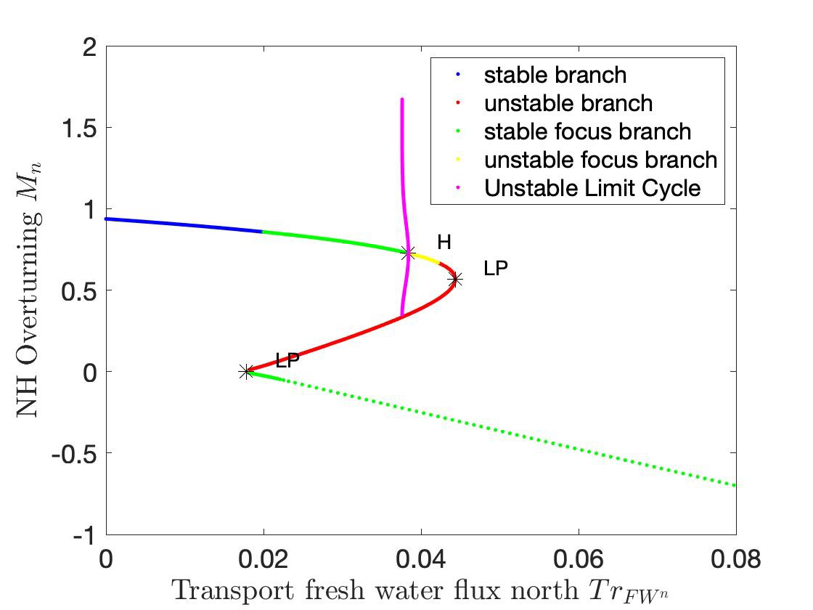 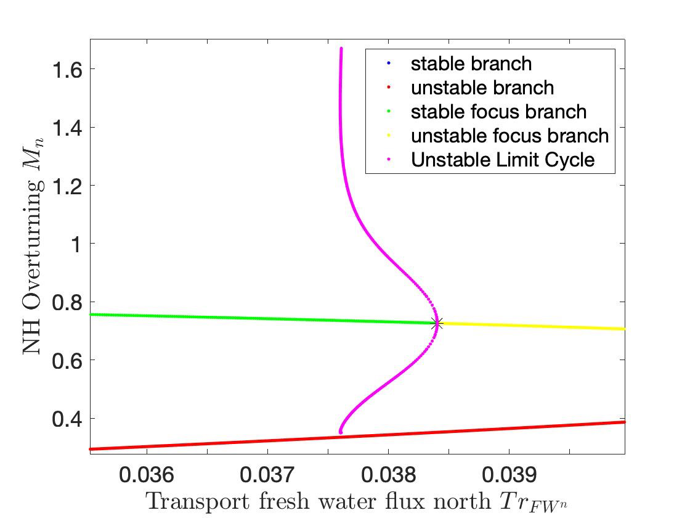Figures 1a-1b. Diagram of NH Overturning Mn (a) and Zoomed-In View of the subcritical Hopf Bifurcation Point (b).
Second view - the two tipping points are of different nature: one of the two is the fold point bifurcation, but the second one is a subcritical Hopf, highlighted in Figures 1-2. The Hopf at TrFWn=0.0384 is subcritical.
Figures 2a-2b. Diagram of Low Latitude Depth D* (a) and Zoomed-In View of the Hopf Bifurcation Point (b).
The value where the limit cycle branch appears to become vertical (an infinite period, homoclinic orbit) is 0.0375.
The subcritical Hopf gives birth to an unstable limit cycle “backwards” in parameter space (that surrounds the exiting stable steady state).
This steady state loses stability at the Hopf bifurcation (red branch in Figures 1-2).
The escape (the “tipping”) arises when a stochastic trajectory wandering around the stable state manages to “cross” the unstable limit cycle and escape to either large oscillations or to a completely different lower circulation branch.
Where the initial condition with D=1 (where D is the Low latitude pycnocline depth) is attracted by the upper branch because there is an early switch activation, so the sharp transition that we see is given by the upper limit point LP. While for D=4 we observe the sharp transition close to the subcritical Hopf (the solution loses stability at the exact Hopf point, because the initial condition may start outside the unstable limit cycle).
Figures 3a-3b. Temporal Bifurcation Diagram for Depth (a) and the Limit Cycle Continuation (b).
- Next Steps:
We are working on a stochastic simulation close to the presented tipping points, to collect data towards a targeted surrogate model. This will allow us to efficiently and accurately estimate escape time distributions.
We will learn targeted effective stochastic DEs (one-dimensional at the LP tipping, two-dimensional at the Hopf tipping) and use them to estimate escape time statistics in both cases.
5 Task 4.3 – AI Simulation
Subtask Description: Report on early experimentation of a baseline GAN for a subset of explorations and what-if questions, including a set of experiments that show feasibility of the causal model, and baseline symbolic language experimental results.
Accomplishments:• Started conducting GAN experiments using the box model data • Exploring behavior of multi-agent GAN loss function• Exploring optimal number of generators• Developed architectures needed for a baseline neuro-symbolic language that enables a translation from human-specific questions to the GAN simulation, and from perturbed GAN runs to questions.
Set up a baseline model that will be used for experimentation
Defined causality in terms of model behavior/time
GAN Experiments
• Three experiments using the Box model simulation data• With a vector of 3 dimensions and perturbations of parameters(bounded): • Dlow0 (Thermocline depth of lower latitudes): [100.0, 400.0] • Mek (Ekman flux from the southern ocean): [1.5e7, 3.5e7] • Fwn (Fresh water flux (North)): [5.0e4, 1.55e6]
Data was augmented for uniform sampling from a 3-D space
In addition to samples, generated 1,000 synthetic samples
Distribution of shutoff vs non-shutoff samples 743/413
• Trained the GAN using equally-weighted generators• Shutoff classification cross-entropy loss functions• Ran for ~250 epochs• Ran experiments with n = to the number of generators where n ∈ [1,2,4]• Generated samples result in shutoffs/non-shutoffs
Discriminator performance in classifying runs as shut-off or not•
- High F-measure scores indicate the discriminator was able to accuracy classify shut-off from non-shut-off runs for held-out test
set
Table 1. Precision, Recall, F-Measure scores for 1,2,4 generator GANs.
Precision |
Recall |
F-Measure |
||
|---|---|---|---|---|
1 Generator |
1 |
1 |
1 |
|
2 Generators |
0.993 |
1 |
0.997 |
|
4 Generators |
0.929 |
1 |
0.963 |
Small initial experiment- but very promising results from discriminator in classifying runs
• After training the GAN, sampled 500 times• Generators tend to favor exploring areas of shut-offs• Training data had some imbalance• Larger dataset would provide verificationTable 2. For 1,2,4 generator GANs – Fraction of 500 samples that resulted in a shut-off.
Generator Idx
0 |
1 |
2 |
3 |
||
|---|---|---|---|---|---|
Number of |
1 |
0.854 |
n/a |
n/a |
n/a |
2 |
0.992 |
0.998 |
n/a |
n/a |
|
Generators |
|||||
4 |
0.982 |
0.986 |
0.972 |
1 |
The trained generators are successfully generating a latent space of shut-offs
Early GAN results show interesting results regarding M_n and shut-off
behavior. More experimentation is underway to explore this further.
Figure 4a-c. GAN generated shut-offs for 1 generator (a), 2 generators (b), and 4 generators (c).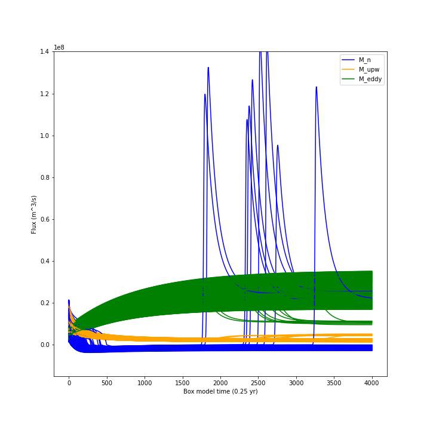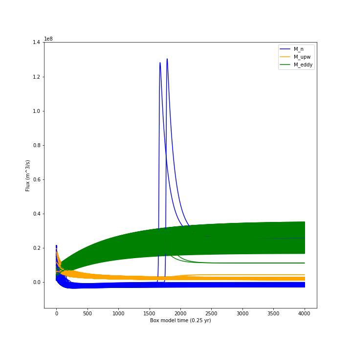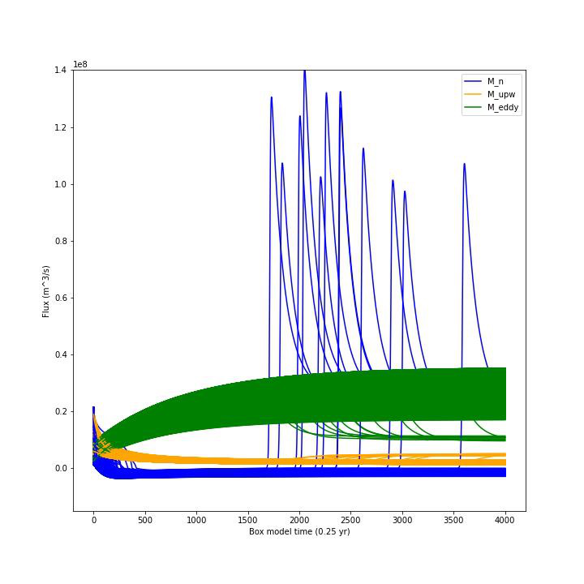
- Observations:
The n=1 generator case produces the greatest fraction of configurations that are non-shutoff states. This could be attributed to the GAN having
more synthetic samples to learn from (i.e. n=2 and n=4 training loops versus n=1 training loop per epoch).
For this particular scenario (i.e. 3 perturbed features w/ fixed
bounds), it appears that n=1 generator is enough to roughly capture the shutoff configurations in this feature space. However, it’s still to be determined how the generators will perform when allowed to perturb more than 3 features.
For Fwn the n=1 generator GAN learns a bi-modal sampling distribution with modes centered at approx.. 0.65e6 and 1.3e6.
When n=2 or n=4, generators learns a left-skewed uni-modal sampling distribution with mode centered at approx.. 1.3e6.
Figure 5a-c. Histograms showing distribution of generated shut-offs for 1 generator (a), 2 generators (b), and 4 generators (c).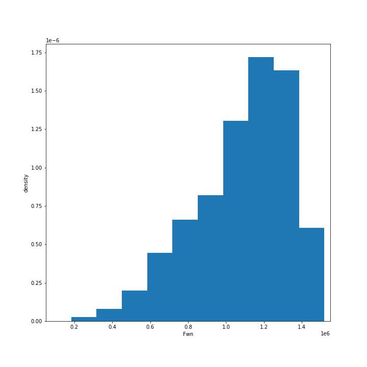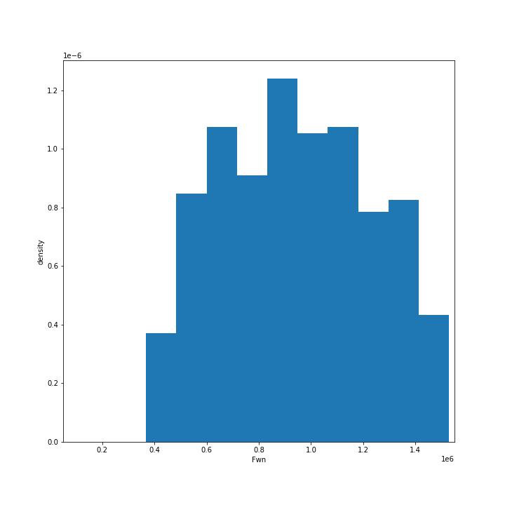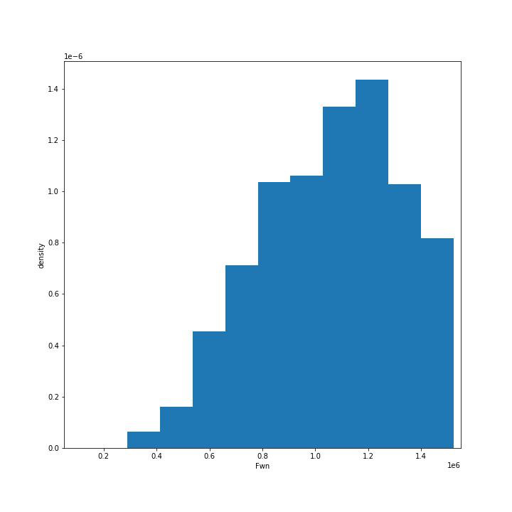
- Observations:
The mode at 0.65e6 has a large cluster of non-shutoff states,
while the mode at 1.3e6 appears to be a cluster for a shutoff state. This finding also coincides with the larger fraction of non-shutoff states generated by the n=1 GAN vs. n=2 and n=4 GANs.
Discriminators incorrectly classify a larger fraction of real samples as synthetic as the number of generators increases.
Neuro-Symbolic Learning
Neuro-symbolic architecture has been defined in terms of levels ofrepresentation:
Text level – climate modeler asks questions
Symbolic level – “programs” generated from natural language
Vector level – GAN works at vector-level perturbing parameters
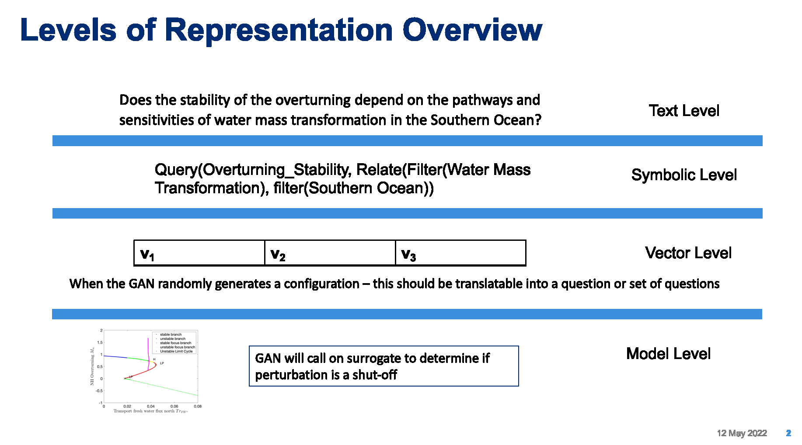• Model level – Surrogate receives input in terms of initial conditions and parameters to run modelFigure 6. Levels of Representation from Natural Language to Model runs.
In training mode: GAN explores space through perturbations
Perturbations are translated into “programs”
“Programs” are translated into natural language
In trained mode: Questions can be asked of the model
Questions are translated into ‘programs’
‘Programs’ are used to find answers using latent space
| 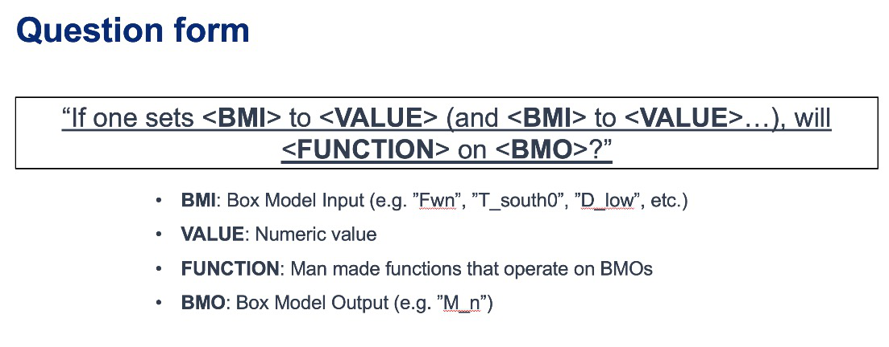 |
| 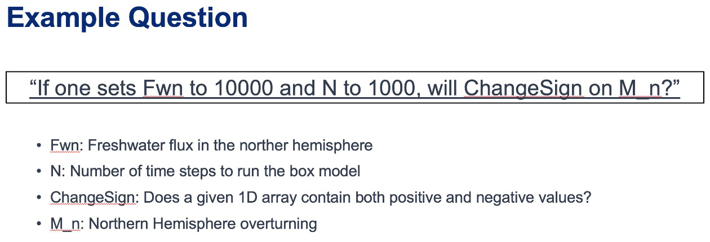 |
Figure 9a-b. Question Template for Version 1 of Neuro-symbolic language (a) and Example Question Using this Template (b).
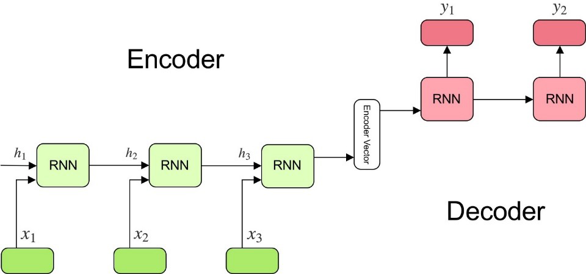
Have currently developed a rule-based method that generates encodings of questions as “programs”
Based on a defined Domain Specific Language (DSL)
Will be used as a baseline for evaluating deep learning methods
Built an automatic question generator for questions following the form in Figure 9a.
Experimenting with a sequence-to-sequence autoencoder to encode questions, and decode into vector input for a GAN
Based on a sequence-to-sequence machine translation
Includes an encoder, encoder vector, and decoder
Encoder has LSTM units stacked, each accepting an element from the question
Encoder vector captures information across the question
Decoder has a stack of LSTMs each predicting an output
This model supports varying length input/output though we are starting with a fixed length and using padding
Figure 10. Seq-to-seq Deep Autoencoder for Learning Translations Between Text and Programs, and Programs and Vectors.
Also, beginning to experiment with the workflow shown in Figure 11
Starting with experiments that focus on question to program translation• A model that learns a fixed sized embedding of the question
Translatable to programs and readable text
Based on Neuro-Symbolic Concept Learner
Figure 11. Novel Neuro-Symbolic Architecture for Translating Questions to Programs based on Neuro-Symbolic Concept Learner (NS-CL).
- Next Steps:
Measure performance of the following translations:
Questions to programs **
Vectors to programs
Figure 12. Visualizing Translations Between Levels – Questions to/from Symbolic Programs (top) and Symbolic Programs to/from Vectors (bottom).
Causality
New Insights
To address two outstanding issues:
1.) AMOC slowing as shown in Figure 13 and inferring likelihood of shutoff, and
2.) Learning how to recover from an AMOC shutoff
Developing causal inference based on temporal evolution of system state
Working on a model to learn relevant causal structures that are occurring as a result of dynamics included in surrogate model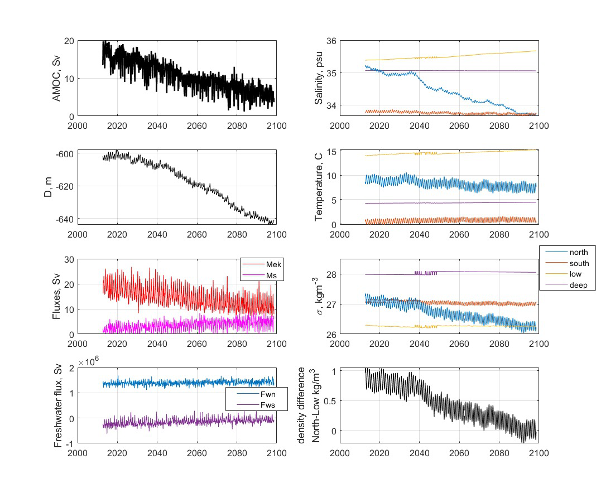
Causal model will capture intermediate states along the way to AMOC shutoffs, focusing on particular states that lie at causal forks in the road of the system’s temporal evolution and that are most
relevant to whether there will be a shutoff or not
Will be used to assign probabilities to potential outcomes
Figure 13. CESM-2 Model Runs that show weakening of the AMOC.
6 Summary
In summary, we have shared results from our initial experimentation related to the surrogate modeling and the AI simulation, specifically related to the GAN and the neuro-symbolic language.
With Milestone 5, we will continue to push forward with building large GCM calibrated data sets and extensions to the box model.

{kind=link}
{kind=link}
{kind=link}
{kind=link}
{kind=link}
{kind=link}
{kind=link}
{kind=link}
{kind=link}
{kind=link}
{kind=link}
{kind=link}
{kind=link}
{kind=link}
{kind=link}
{kind=link}
{kind=link}
{kind=link}
{kind=link}
Approved for public release; distribution is unlimited. This material is based upon work supported by the Defense Advanced Research Projects Agency (DARPA) under Agreement No. HR00112290032.
Citations
1. Boers, Niklas. “Observation-based early-warning signals for a collapse of the Atlantic Meridional Overturning Circulation.” Nature Climate Change 11, no. 8 (2021): 680-688.
2. Gnanadesikan, A., A simple model for the structure of the oceanic pycnocline, Science., 283:2077-2079, (1999).
3. Forget, G., J.-M. Campin, P. Heimbach, C. N. Hill, R. M. Ponte, C. Wunsch, ECCO version 4: An integrated framework for non-linear inverse modeling and global ocean state estimation. Geosci. Model Dev. 8, 3071–3104 (2015)4. Gnanadesikan, A., R. Kelson and M. Sten, Flux correction and overturning stability: Insights from a dynamical box model, J. Climate, 31, 9335-9350, https://doi.org/10.1175/JCLI-D-18-0388.1, (2018).5. Kaufhold, John Patrick, and Jennifer Alexander Sleeman. “Systems and methods for deep model translation generation.” U.S. Patent No. 10,504,004. 10 Dec. 2019.
6. Garcez, Artur d’Avila, and Luis C. Lamb. “Neurosymbolic AI: the 3rd Wave.” arXiv preprint arXiv:2012.05876 (2020).
7. Stommel, H. Thermohaline convection with two stable regimes of flow. Tellus 13, 224–230 (1961).
8. Karniadakis, George Em, Ioannis G. Kevrekidis, Lu Lu, Paris Perdikaris, Sifan Wang, and Liu Yang. “Physics-informed machine learning.” Nature Reviews Physics 3, no. 6 (2021): 422-440.
9. Sleeman, Jennifer, Milton Halem, Zhifeng Yang, Vanessa Caicedo, Belay Demoz, and Ruben Delgado. “A Deep Machine Learning Approach for LIDAR Based Boundary Layer Height Detection.” In IGARSS 2020-2020 IEEE International Geoscience and Remote Sensing Symposium, pp. 3676-3679. IEEE, 2020.
10. Patel, Kinjal, Jennifer Sleeman, and Milton Halem. “Physics-aware deep edge detection network.” In Remote Sensing of Clouds and the Atmosphere XXVI, vol. 11859, pp. 32-38. SPIE, 2021.
11.Brulé, Joshua. “A causation coefficient and taxonomy of correlation/causation relationships.” arXiv preprint arXiv:1708.05069 (2017).
12. Rasp, Stephan, Michael S. Pritchard, and Pierre Gentine. “Deep learning to represent subgrid processes in climate models.” Proceedings of the National Academy of Sciences 115, no. 39 (2018): 9684-9689.
13. Bolton, Thomas, and Laure Zanna. “Applications of deep learning to ocean data inference and subgrid parameterization.” Journal of Advances in Modeling Earth Systems 11, no. 1 (2019): 376-399.
14. Kurth, Thorsten, Sean Treichler, Joshua Romero, Mayur Mudigonda, Nathan Luehr, Everett Phillips, Ankur Mahesh et al. “Exascale deep learning for climate analytics.” In SC18: International Conference for High Performance Computing, Networking, Storage and Analysis, pp. 649-660. IEEE, 2018.